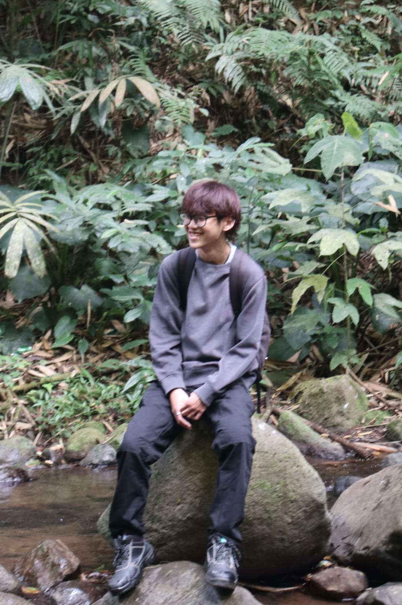

Website Portfolio
Website portfolio pribadi yang dibuat menggunakan HTML dan CSS.
HTML, CSSPortfolio Mahasiswa
Saya adalah mahasiswa semester 3 Informatika di Institut Teknologi Nasional Bandung yang sedang belajar pemrograman, website, database, dan software development melalui tugas kuliah maupun project kecil.

Saya merupakan mahasiswa Informatika semester 3 di Institut Teknologi Nasional Bandung. Saat ini saya masih dalam tahap belajar dan mencoba berbagai bidang dalam software development. Saya senang membuat project sederhana untuk memahami bagaimana sebuah program dan website bekerja.
Teknologi yang saya pelajari melalui perkuliahan, latihan, dan project kecil.
Beberapa project kecil yang saya buat selama belajar pemrograman.
Website portfolio pribadi yang dibuat menggunakan HTML dan CSS.
HTML, CSSProgram sederhana untuk menentukan menu dan jam operasional warung kopi.
PythonDatabase sederhana untuk menyimpan dan mengelola data mahasiswa.
MySQLLatihan menggunakan LED, tombol, potentiometer, dan display.
ArduinoLatihan memahami struktur, layout, dan responsive website.
HTML, CSSMulai mempelajari dasar-dasar pemrograman.
Masuk Program Studi Informatika di Institut Teknologi Nasional Bandung.
Mulai mempelajari web development, database, dan software development.
Membuat project kecil dan terus mengembangkan kemampuan programming.
Mari terhubung
Terbuka untuk berdiskusi, bertukar ide, atau belajar bersama.